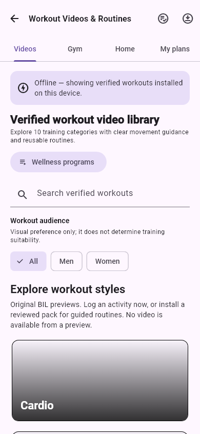
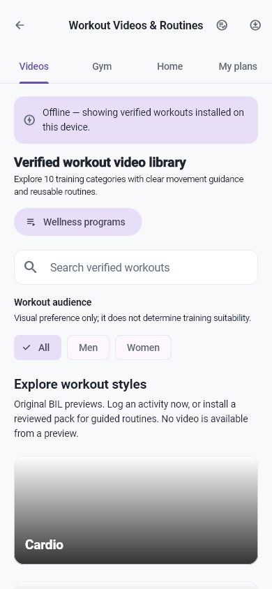
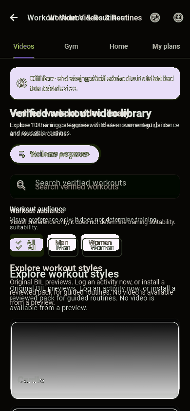
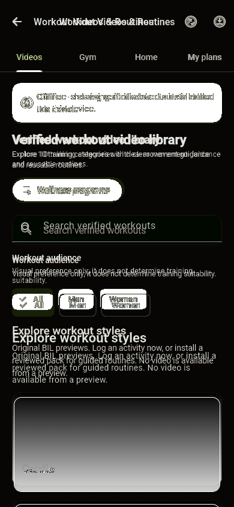

التصنيف المقترح: B. Workouts offline: tabs وأمانoffline والجمهور وكارتCardio محفوظة؛ الخطوط/أيقوناتالتبويب وحوافSearch/Card تغييرcalm scope، لا تحميلفيديوحي.
RobotoEvidence / BILArabic or NotoArabicEvidence; readable real glyphs
Baseline test/goldens/workouts/workout_library_offline_empty_phone.png, commit 017d63449bd1b0d0fa6fbd592f494cb49d537a4a
Source: lib/features/wellness/presentation/workout_library_page.dart:267
HOLD RED; main QA approves this exact pair individually. A: replace invalid font evidence only after signoff; B: verify intended source history and approve or reclassify C.
Same pixels as previous failed actual: True. Master unchanged, no approval.



